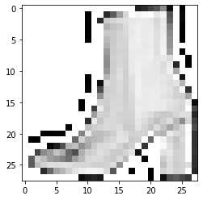

# Load data
(x_train, y_train), (x_test, y_test) = tf.keras.datasets.fashion_mnist.load_data()In this tutorial, we are going to see how to embed a simple image preprocessing function within a trained model (tf.keras) while exporting it for serving. This is a useful feature to have because it can help us reduce a lot of boilerplate code needed while using any model for serving purposes. With this capability, you get a lot more flexibility and modularity to your model.
Note
At the time of writing this post, layers under tf.keras.layers.experimental.preprocessing were fairly new. But with time, they have matured enough and I encourage the usage of these layers inside TensorFlow/Keras models.
Data loading, preprocessing, and visualization
To keep things simple we will be using the FashionMNIST dataset. Note that these techniques can easily be applied to more complex models as well (with some limitation).
We are not going to preprocess the images before hand. We will let the model do it.
# Class labels (don't change the order)
CLASSES = ["T-shirt/top", "Trouser", "Pullover", "Dress", "Coat",
"Sandal", "Shirt", "Sneaker", "Bag", "Ankle boot"]# Show a few examples from the train set
plt.figure(figsize=(10,10))
for i in range(25):
plt.subplot(5,5,i+1)
plt.xticks([])
plt.yticks([])
plt.grid(True)
plt.imshow(x_train[i], cmap=plt.cm.binary)
plt.xlabel(CLASSES[y_train[i]])
plt.show()
Model building and training
We are good to proceed towards building and training a neural network. We will first define a simple preprocessing function to scale the pixel values and then we will embed it into the model using a Lambda layer. You can replace this anything fancy you would want.
We will use a shallow network architecture so that we can train it quickly.
# Define the preprocessing function
# We will embed it in the model later
def preprocess_image(image_pixels):
img = image_pixels / 255
return img
# A humble model
def get_training_model():
# Construct the model using the Functional API
input_layer = tf.keras.layers.Input(shape=(28, 28), name="input_layer")
preproc_layer = tf.keras.layers.Lambda(preprocess_image, name="lambda_layer")(input_layer) # Preprocessing function
flatten = tf.keras.layers.Flatten()(preproc_layer)
dense_1 = tf.keras.layers.Dense(128, activation="relu")(flatten)
dropout = tf.keras.layers.Dropout(0.2)(dense_1)
outputs = tf.keras.layers.Dense(len(CLASSES), activation="softmax")(dropout)
# Create the model
model = tf.keras.models.Model(input_layer, outputs)
# Compile the model and return it
model.compile(optimizer='adam',
loss='sparse_categorical_crossentropy',
metrics=['accuracy'])
return model# Topology of the model
tf.keras.utils.plot_model(get_training_model(), show_shapes=True)
The Lambda layer is our preprocessing layer.
# Train the model for 10 epochs
apparel_model = get_training_model()
history = apparel_model.fit(x_train, y_train,
validation_data=(x_test, y_test),
epochs=10,
batch_size=128)Epoch 1/10
469/469 [==============================] - 2s 4ms/step - loss: 0.6004 - accuracy: 0.7937 - val_loss: 0.4682 - val_accuracy: 0.8347
Epoch 2/10
469/469 [==============================] - 2s 4ms/step - loss: 0.4246 - accuracy: 0.8495 - val_loss: 0.4089 - val_accuracy: 0.8521
Epoch 3/10
469/469 [==============================] - 2s 4ms/step - loss: 0.3795 - accuracy: 0.8642 - val_loss: 0.3928 - val_accuracy: 0.8564
Epoch 4/10
469/469 [==============================] - 2s 4ms/step - loss: 0.3576 - accuracy: 0.8711 - val_loss: 0.3632 - val_accuracy: 0.8687
Epoch 5/10
469/469 [==============================] - 2s 4ms/step - loss: 0.3407 - accuracy: 0.8762 - val_loss: 0.3593 - val_accuracy: 0.8688
Epoch 6/10
469/469 [==============================] - 2s 4ms/step - loss: 0.3294 - accuracy: 0.8788 - val_loss: 0.3532 - val_accuracy: 0.8721
Epoch 7/10
469/469 [==============================] - 2s 4ms/step - loss: 0.3165 - accuracy: 0.8846 - val_loss: 0.3609 - val_accuracy: 0.8685
Epoch 8/10
469/469 [==============================] - 2s 4ms/step - loss: 0.3084 - accuracy: 0.8859 - val_loss: 0.3503 - val_accuracy: 0.8701
Epoch 9/10
469/469 [==============================] - 2s 4ms/step - loss: 0.2982 - accuracy: 0.8915 - val_loss: 0.3560 - val_accuracy: 0.8713
Epoch 10/10
469/469 [==============================] - 2s 4ms/step - loss: 0.2886 - accuracy: 0.8929 - val_loss: 0.3381 - val_accuracy: 0.8776Now that we have a trained model, we can go ahead and export it and then we will see how to use it on new images for inference.
Sample test image and model export
We are getting close. Now that we have a trained model here are the things we would do from here: - Serialize a randomly selected image from the test set.
- Export the model and parse model predictions.
Let’s go.
Step 1: Serializing a randomly selected image from the test set
# Select a random image from the test set for serialization
sampe_test_img_id = np.random.choice(x_test.shape[0], 1)
sampe_test_img = x_test[sampe_test_img_id].squeeze() # Remove the batch dimension
sampe_test_img = (sampe_test_img * 255).astype("int32") # Scale back to integer
# Verify image label and shape
print("Image class: ",CLASSES[y_test[int(sampe_test_img_id)]])
print(sampe_test_img.shape)Image class: Ankle boot
(28, 28)# Serialize the image
cv2.imwrite("sample_image.png", sampe_test_img)Note that while writing a grayscale image, OpenCV adds the channel dimension of 3 to it. We will need to handle carefully.
# Make sure the serialized image is good to go
plt.imshow(plt.imread("sample_image.png"), cmap=plt.cm.binary)
plt.show()
Step 2: Model exporting and parsing predictions
Let’s first serialize our model and load it.
# Serialize the model and load it
apparel_model.save("apparel_model.h5")
restored_model = tf.keras.models.load_model("apparel_model.h5")WARNING:tensorflow:Error in loading the saved optimizer state. As a result, your model is starting with a freshly initialized optimizer.This warning is not desirable. When the optimizer is loaded with a fresh state, the model predictions can be erroneous. So, to resolve this problem we will only be serializing the weights of the model with the save_weights() function. There can be other nuances like this when you work with Lambda layers and you can check this article out to know about them.
apparel_model.save_weights("apparel_model.h5")We will now initialize a dummy model with the same architecture as the one we trained and we will then load the weights of our trained model into it.
restored_model = get_training_model()
restored_model.load_weights("apparel_model.h5")Now we should be good to go with the predictions part. First, let’s load the image we serialized in step 1. As mentioned before, OpenCV adds 3-channels to grayscale images while saving them. We can take care of this issue with cv2.cvtColor(image_pixels, cv2.COLOR_BGR2GRAY).
# Load the image
image_pixels = cv2.imread("sample_image.png")
image_pixels = cv2.cvtColor(image_pixels, cv2.COLOR_BGR2GRAY)
# Preview the image
plt.imshow(image_pixels, cmap=plt.cm.binary)
plt.show()
# Run inference and parse the prediction
class_probabilities = restored_model.predict(np.expand_dims(image_pixels, 0))[0]
print("Predicted ",CLASSES[np.argmax(class_probabilities)])Predicted Ankle bootWe can see that it is working as expected.
# Load and *preprocess* data
(x_train, y_train), (x_test, y_test) = tf.keras.datasets.fashion_mnist.load_data()
x_train = x_train / 255
x_test = x_test / 255Taking it a step further with concrete functions and SavedModel
The SavedModel format is the standard serialization format in TensorFlow 2.x since it communicates very well with the entire TensorFlow ecosystem. Be it GCP AI Platform, be it tf.keras, be it TFLite, etc,, SavedModel format unifies the entire ecosystem. For serializing custom models (developed using subclassing) SavedModel would be needed as well.
In this section, let’s see how can we do the same i.e. embed a preprocessing function inside a model so that it can be serialized in the SavedModel format.
Step 1: Create a sequential model without any preprocessing layer
def get_training_model_v2():
# Construct the model using the Functional API
input_layer = tf.keras.layers.Input(shape=(28, 28), name="input_layer")
flatten = tf.keras.layers.Flatten()(input_layer)
dense_1 = tf.keras.layers.Dense(128, activation="relu")(flatten)
dropout = tf.keras.layers.Dropout(0.2)(dense_1)
outputs = tf.keras.layers.Dense(len(CLASSES), activation="softmax")(dropout)
# Create the model
model = tf.keras.models.Model(input_layer, outputs)
# Compile the model and return it
model.compile(optimizer="adam",
loss="sparse_categorical_crossentropy",
metrics=["accuracy"])
return modelStep 2: Train it!
# Train the model for 10 epochs
apparel_model_v2 = get_training_model_v2()
history = apparel_model_v2.fit(x_train, y_train,
validation_data=(x_test, y_test),
epochs=10,
batch_size=128)Epoch 1/10
469/469 [==============================] - 2s 4ms/step - loss: 0.5995 - accuracy: 0.7914 - val_loss: 0.4549 - val_accuracy: 0.8347
Epoch 2/10
469/469 [==============================] - 2s 4ms/step - loss: 0.4200 - accuracy: 0.8501 - val_loss: 0.4094 - val_accuracy: 0.8520
Epoch 3/10
469/469 [==============================] - 2s 4ms/step - loss: 0.3823 - accuracy: 0.8616 - val_loss: 0.3831 - val_accuracy: 0.8635
Epoch 4/10
469/469 [==============================] - 2s 4ms/step - loss: 0.3575 - accuracy: 0.8713 - val_loss: 0.3896 - val_accuracy: 0.8563
Epoch 5/10
469/469 [==============================] - 2s 4ms/step - loss: 0.3405 - accuracy: 0.8758 - val_loss: 0.3569 - val_accuracy: 0.8720
Epoch 6/10
469/469 [==============================] - 2s 4ms/step - loss: 0.3249 - accuracy: 0.8813 - val_loss: 0.3490 - val_accuracy: 0.8733
Epoch 7/10
469/469 [==============================] - 2s 4ms/step - loss: 0.3176 - accuracy: 0.8840 - val_loss: 0.3480 - val_accuracy: 0.8735
Epoch 8/10
469/469 [==============================] - 2s 4ms/step - loss: 0.3055 - accuracy: 0.8878 - val_loss: 0.3355 - val_accuracy: 0.8809
Epoch 9/10
469/469 [==============================] - 2s 4ms/step - loss: 0.2971 - accuracy: 0.8914 - val_loss: 0.3331 - val_accuracy: 0.8792
Epoch 10/10
469/469 [==============================] - 2s 4ms/step - loss: 0.2905 - accuracy: 0.8920 - val_loss: 0.3344 - val_accuracy: 0.8808Step 3: SavedModel plunge
Okay! Now we are ready to the crux of the section. We will first create a custom model class (inherited from tf.keras.Model) and it will contain two things: - A model that is loaded with the weights of a trained model - A serving function that will contain the preprocessing function along with the necessary signature.
# A custom class for serving
class ExportModel(tf.keras.Model):
def __init__(self, model):
super().__init__(self)
self.model = model
@tf.function(input_signature=[tf.TensorSpec([None, 28, 28], dtype=tf.uint8)])
def my_serve(self, images):
images = tf.cast(images, tf.float32) / 255 # pre-processing
probabilities = self.model(images) # prediction from model
class_index = tf.argmax(probabilities, axis=-1) # post-processing
return {"class_index": class_index}my_serve is our serving function. You can see that is decorated with tf.function and the reason behind doing so is it allows us to embed an arbitrary function in a model’s graph which can later be exported using the SavedModel format.
We can also see - input_signature=[tf.TensorSpec([None, 28, 28], dtype=tf.uint8)]. This is needed in order to indicate which part of the model’s graph would be needed while serving. By specifying tf.TensorSpec([None, 28, 28], we instruct the function that the inputs should respect this shape - [None, 28, 28] and the dtype argument is self-explanatory.
We will get to why the return type of the function is done in such a way - {"class_index": class_index} in a moment.
If you are interested to know more using SavedModel and different serialization options that come with it, be sure to check this tutorial out.
Step 4: Instantiate a dummy model and set its weights
# Set the weights of this dummy model to the weights of the model we trained
restored_model = get_training_model_v2()
restored_model.set_weights(apparel_model_v2.get_weights()) Step 5: Export the model and run inference
Now, to serialize the model in the SavedModel format we will make use of tf.saved_model.save. It can automatically determine which input signature to use for serving for most of the models if the details are available. However, in our case, it won’t be able to do so. So, we will need to explicitly indicate which function to use as the signature while serving.
export_path = "/content/saved_model/1/"
tf.keras.backend.set_learning_phase(0) # Make sure no weight update happens
serving_model = ExportModel(restored_model) # Instantiate a model with the preprocessing function
tf.saved_model.save(serving_model, export_path, signatures={'serving_default': serving_model.my_serve})WARNING:tensorflow:Skipping full serialization of Keras layer <__main__.ExportModel object at 0x7f4096b7b358>, because it is not built.
WARNING:tensorflow:From /usr/local/lib/python3.6/dist-packages/tensorflow/python/ops/resource_variable_ops.py:1817: calling BaseResourceVariable.__init__ (from tensorflow.python.ops.resource_variable_ops) with constraint is deprecated and will be removed in a future version.
Instructions for updating:
If using Keras pass *_constraint arguments to layers.
INFO:tensorflow:Assets written to: /content/saved_model/1/assetsBy specifying 'serving_default': serving_model.my_serve we instructed tf.saved_model.save about which signature to use for serving. Now if we inspect what all were saved, things should seem consistent. For this we are going to use the saved_model_cli command-line interpreter.
!saved_model_cli show --dir /content/saved_model/1 --tag_set serve --signature_def serving_defaultThe given SavedModel SignatureDef contains the following input(s):
inputs['images'] tensor_info:
dtype: DT_UINT8
shape: (-1, 28, 28)
name: serving_default_images:0
The given SavedModel SignatureDef contains the following output(s):
outputs['class_index'] tensor_info:
dtype: DT_INT64
shape: (-1)
name: StatefulPartitionedCall:0
Method name is: tensorflow/serving/predictSo, we can see that the configuration that is expected from the inputs and the outputs of the serialized model is consistent with what we had instructed. We returned the outputs in form a dictionary (namely class_index) in my_serve and we can see that as well.
We can also do the inspection in Pythonic ways.
loaded = tf.saved_model.load("/content/saved_model/1/")
print(list(loaded.signatures.keys())) # This signature will be used while serving['serving_default']# Output configuration
infer = loaded.signatures["serving_default"]
print(infer.structured_outputs){'class_index': TensorSpec(shape=(None,), dtype=tf.int64, name='class_index')}Let’s finally run the inference!
# Load the sample image
image_pixels = cv2.imread("sample_image.png")
image_pixels = cv2.cvtColor(image_pixels, cv2.COLOR_BGR2GRAY)# Run inference
CLASSES[infer(tf.constant(image_pixels))["class_index"].numpy()[0]]'Ankle boot'We can see that the prediction is correct in this case as well. So, when we ran infer = loaded.signatures["serving_default"] we essentially loaded a concrete function i.e. we loaded my_serve. Remember we assigned the value of serving_default in the beginning of this section?
With infer(tf.constant(image_pixels)) we are simply running our input image through the concrete function and we are parsing the output from the dictionary (class_index being the key) it returns .